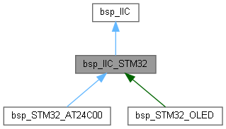
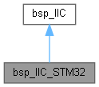

STM32版本的软件IIC 需要使用构造函数初始化 更多...
#include <bsp_IIC_STM32.h>
类 bsp_IIC_STM32 继承关系图:

bsp_IIC_STM32 的协作图:

Public 成员函数 | |
| bsp_IIC_STM32 (GPIO_TypeDef *GPIOx_SCK, uint16_t GPIO_Pin_SCK, GPIO_TypeDef *GPIOx_SDA, uint16_t GPIO_Pin_SDA) | |
| 构造STM32的IIC软件发生器 更多... | |
 Public 成员函数 继承自 bsp_IIC Public 成员函数 继承自 bsp_IIC | |
| void | IIC_WriteOneByte (u8 id, u8 addr, u8 dat) |
| 使用总线发送一个字节数据 更多... | |
| u8 | IIC_ReadOneByte (u8 id, u8 addr) |
| 使用总线接收一个字节数据 更多... | |
| void | IIC_Write (u8 id, u8 addr, u8 *dat, u32 len) |
| 使用总线发送定长数据 更多... | |
| void | IIC_Read (u8 id, u8 addr, u8 *dat, u32 len) |
| 使用总线接收定长数据 更多... | |
| void | IIC_Start (void) |
| 发送IIC开始信号 更多... | |
| void | IIC_Stop (void) |
| 发送IIC停止信号 更多... | |
| void | IIC_SendAck (u8 ackbit) |
| 发送IIC应答信号 更多... | |
| u8 | IIC_WaitAck (void) |
| 等待应答信号 更多... | |
| void | IIC_SendByte (u8 byt) |
| 发送IIC一个字节信号 更多... | |
| u8 | IIC_RecByte (void) |
| 接收IIC一个字节信号 更多... | |
Public 属性 | |
| GPIO_TypeDef * | GPIOx_SCK |
| uint16_t | GPIO_Pin_SCK |
| GPIO_TypeDef * | GPIOx_SDA |
| uint16_t | GPIO_Pin_SDA |
Protected 成员函数 | |
| u8 | IIC_SCK (u8 var) |
| 控制SCK管脚口 更多... | |
| u8 | IIC_SDA (u8 var) |
| 控制SDA管脚口 更多... | |
| virtual void | IIC_Delay (void) |
| 时序中的延时 在此处短暂延时 更多... | |
| virtual u8 | IIC_SCK (u8 var)=0 |
| 控制SCK管脚口 更多... | |
| virtual u8 | IIC_SDA (u8 var)=0 |
| 控制SDA管脚口 更多... | |
| virtual void | IIC_Delay (void)=0 |
| 时序中的延时 在此处短暂延时 更多... | |
详细描述
STM32版本的软件IIC 需要使用构造函数初始化
在文件 bsp_IIC_STM32.h 第 55 行定义.
构造及析构函数说明
◆ bsp_IIC_STM32()
| bsp_IIC_STM32::bsp_IIC_STM32 | ( | GPIO_TypeDef * | GPIOx_SCK, |
| uint16_t | GPIO_Pin_SCK, | ||
| GPIO_TypeDef * | GPIOx_SDA, | ||
| uint16_t | GPIO_Pin_SDA | ||
| ) |
构造STM32的IIC软件发生器
- 参数
-
*GPIOx_SCK SCK的端口 GPIO_Pin_SCK SCK的管口号 *GPIOx_SDA SDA的端口 GPIO_Pin_SDA SDA的管口号
在文件 bsp_IIC_STM32.cpp 第 51 行定义.
成员函数说明
◆ IIC_Delay()
|
protectedvirtual |
◆ IIC_SCK()
控制SCK管脚口
- 参数
-
var 此处有三个状态,IIC_SET置位管脚,IIC_RESET复位管脚
- 返回
- 当var为IIC_READ时返回管脚状态
实现了 bsp_IIC.
在文件 bsp_IIC_STM32.cpp 第 73 行定义.
◆ IIC_SDA()
控制SDA管脚口
- 参数
-
var 此处有三个状态,IIC_SET置位管脚,IIC_RESET复位管脚
- 返回
- 当var为IIC_READ时返回管脚状态
实现了 bsp_IIC.
在文件 bsp_IIC_STM32.cpp 第 88 行定义.
类成员变量说明
◆ GPIO_Pin_SCK
| uint16_t bsp_IIC_STM32::GPIO_Pin_SCK |
在文件 bsp_IIC_STM32.h 第 64 行定义.
◆ GPIO_Pin_SDA
| uint16_t bsp_IIC_STM32::GPIO_Pin_SDA |
在文件 bsp_IIC_STM32.h 第 66 行定义.
◆ GPIOx_SCK
| GPIO_TypeDef* bsp_IIC_STM32::GPIOx_SCK |
在文件 bsp_IIC_STM32.h 第 63 行定义.
◆ GPIOx_SDA
| GPIO_TypeDef* bsp_IIC_STM32::GPIOx_SDA |
在文件 bsp_IIC_STM32.h 第 65 行定义.
该类的文档由以下文件生成:
- D:/gitt/MicrochipFor32/bsp_Device/bsp_IIC/bsp_IIC_STM32.h
- D:/gitt/MicrochipFor32/bsp_Device/bsp_IIC/bsp_IIC_STM32.cpp